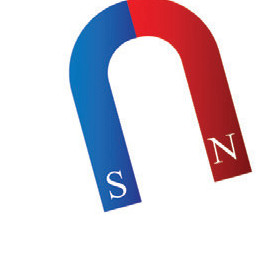
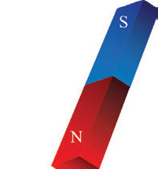
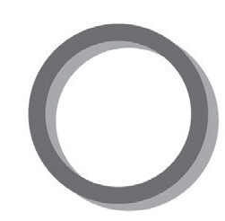
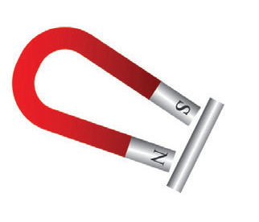
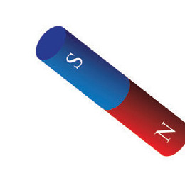
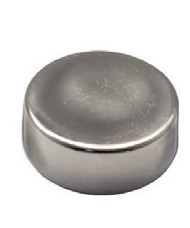
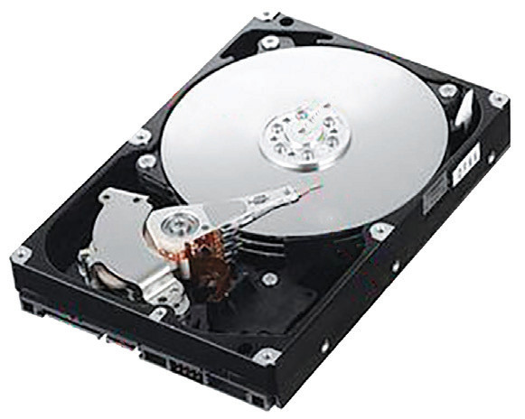

7. A freely suspended bar magnet always points in a north–south direction. The north pole of a freely suspended magnet points in the north direction, and the south pole points in the south direction of the Earth. Likewise, the arrow of a compass needle points towards the north.
Shapes of magnets
Magnets are of different types, and they work in different ways. They differ in materials, shapes, sizes, functions, forces and applications. For example, magnets can have different shapes, which include bar, horseshoe and disc as shown in Figure 3.10. Magnets also vary in size from tiny discs used in speakers to large magnets used in commercial power-generating plants. One of the largest magnets is perhaps the Earth itself.






Figure 3.10: Types of magnets according to their shapes
Applications of magnets
Magnets are widely used in various electronic devices, as described in the following examples:
1. Magnetic recording media
Magnetic recording is a technology that stores information on a magnetic medium. Examples of magnetic recording media include computer hard discs as shown in Figure 3.11. In the hard disc, the magnetic material is coated with aluminium or glass. The recorded information can be retrieved by playing back, using a special head.

2. Credit, debit and ATM cards
These have a magnetic strip on one of their sides. This strip contains the necessary information to contact an individual’s financial institution and connect with their account. These automatic cash cards also use magnetic ink to store information. Figure 3.12 shows an example of an automatic cash card.